E-Portfolio
3rd and 4th Quarter Section
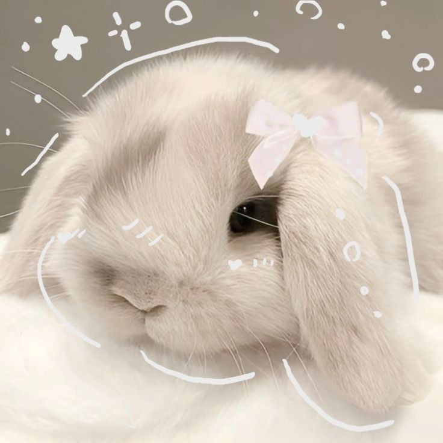
Basic Information
I am Mayumi Vergara. I am 15 years old and I go to LPSCI. This is my grade 9 e-portfolio that I crammed.
I like many things but as of right now, I like playing mobile legends bang bang and admiring my favourite kpop idols.
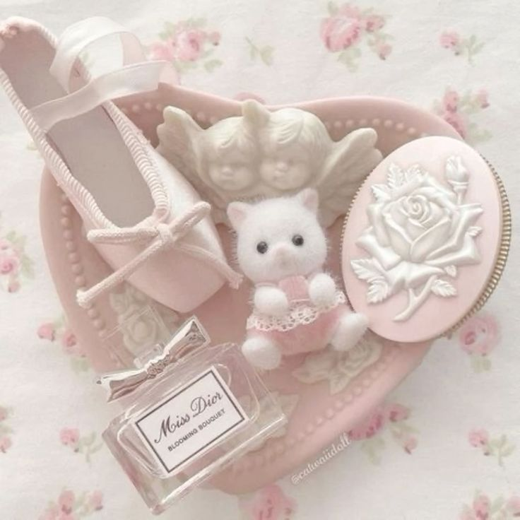
1st Quarter Events

Buwan ng Wika
Buwan ng Wika is a month-long celebration dedicated to honoring the Filipino language and culture. It is a time when students participate in various activities that showcase the richness of the Filipino language, including poetry recitations, declamation contests, and cultural performances. From this event, I learned the importance of preserving and appreciating our national language and heritage. It reminded me that our language is a core part of our identity as Filipinos, and we should take pride in using and practicing it in our daily lives.
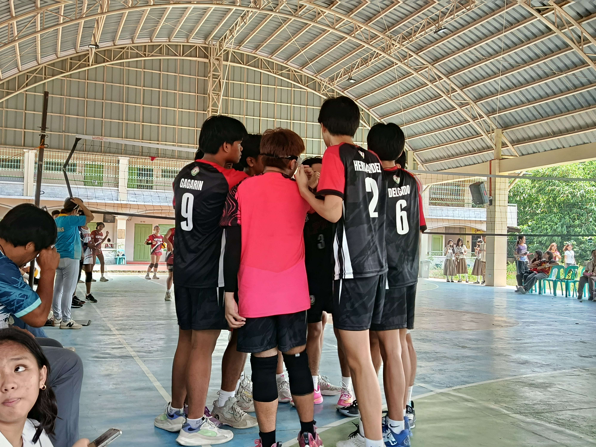
Cluster
Cluster is an event where students from different schools or sections come together to compete in various academic and athletic activities. This event fosters teamwork, sportsmanship, and healthy competition among participants. From Cluster, I learned how to work collaboratively with others, communicate effectively, and represent my school with pride. It taught me the value of unity and cooperation, as well as the importance of supporting my teammates through both wins and losses.

Intrams
Intramurals, or Intrams, is a school-wide sports event where students compete in various athletic activities such as running, basketball, volleyball, and many more. It is a celebration of physical fitness and sportsmanship within the school community. Through Intrams, I learned the importance of staying active and healthy, as well as the value of perseverance and determination. It also taught me how to handle both victory and defeat gracefully, and how to support my fellow classmates in their athletic endeavors.
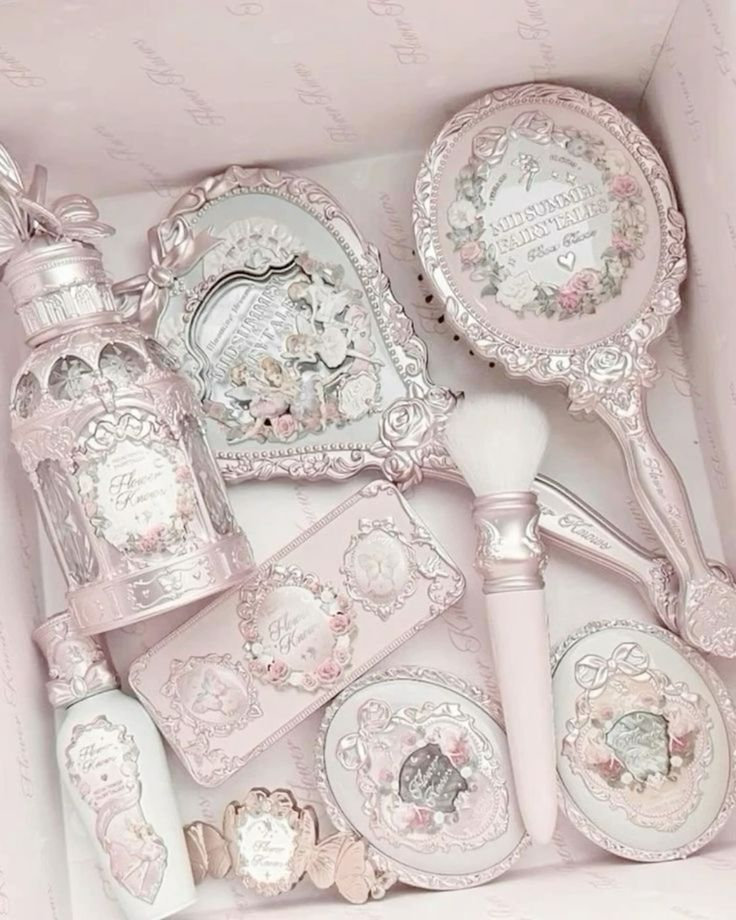
2nd Quarter Events
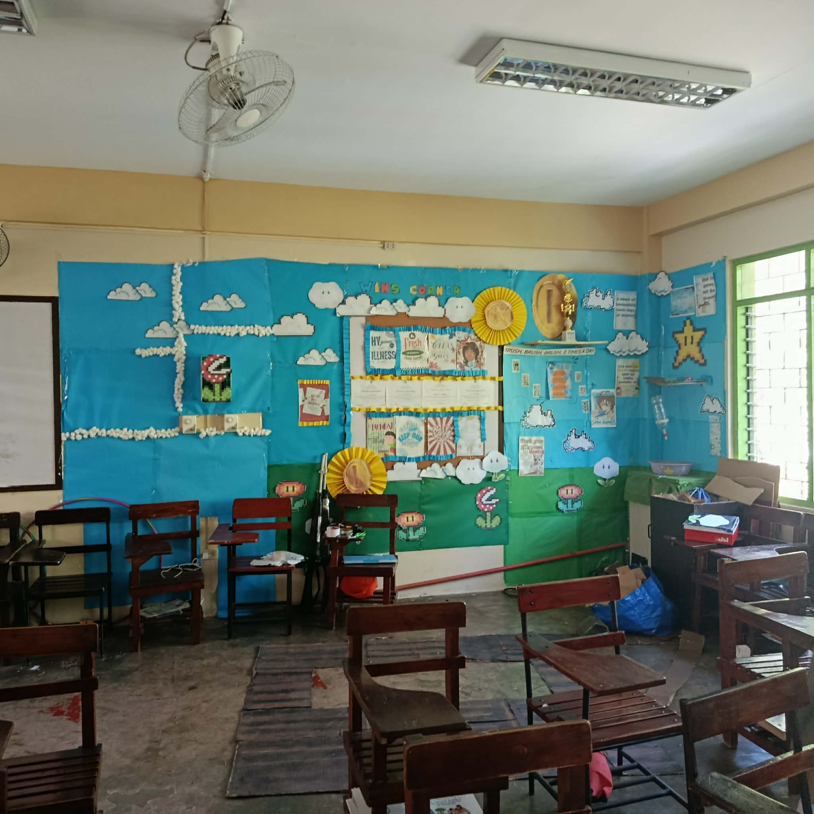
WinS Corner
WinS Corner, which stands for Wellness in School Corner, is an initiative that promotes the physical, mental, and emotional well-being of students within the school premises. It provides a safe and relaxing space where students can unwind, engage in wellness activities, and learn about healthy habits. Through WinS Corner, I learned the importance of taking care of my mental health and balancing academic responsibilities with self-care. It taught me that wellness is not just about physical health, but also about having a positive mindset and emotional resilience.
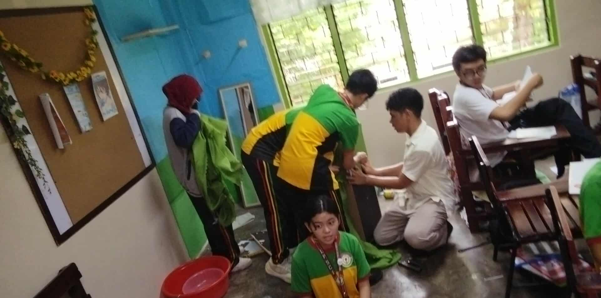
Science Month
Science Month is a month-long celebration dedicated to exploring and appreciating the wonders of science. During this event, students participate in various scientific activities such as experiments, research projects, science fairs, and quizzes. It is an opportunity to foster curiosity and a love for discovery among learners. Through Science Month, I learned the importance of curiosity and critical thinking in understanding the world around us. It taught me to ask questions, seek evidence, and appreciate the scientific method that drives innovation and progress in our society.
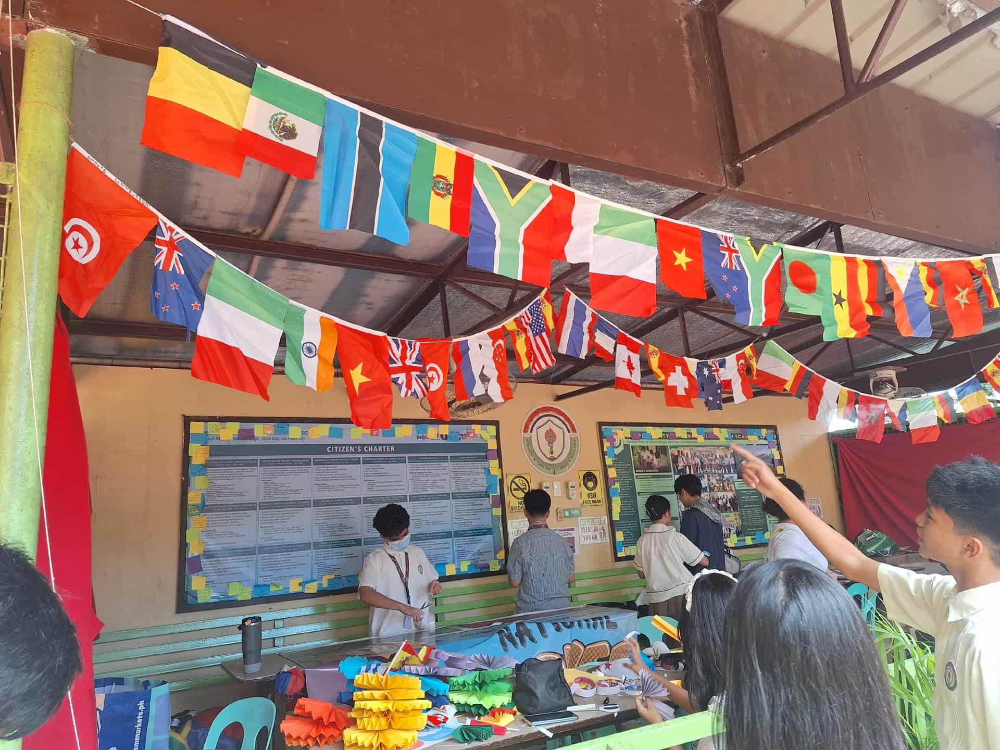
AP Month
AP Month, or Araling Panlipunan Month, is a celebration dedicated to deepening students' understanding of Philippine history, geography, civics, and culture. Activities include quizzes, exhibits, and presentations about Philippine history and current events. Through AP Month, I learned the importance of understanding our nation's past to better navigate our future. It taught me to be aware of social issues, appreciate our cultural heritage, and become a responsible and informed citizen of our country.
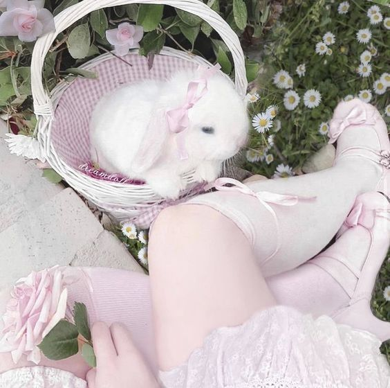
3rd Quarter Events
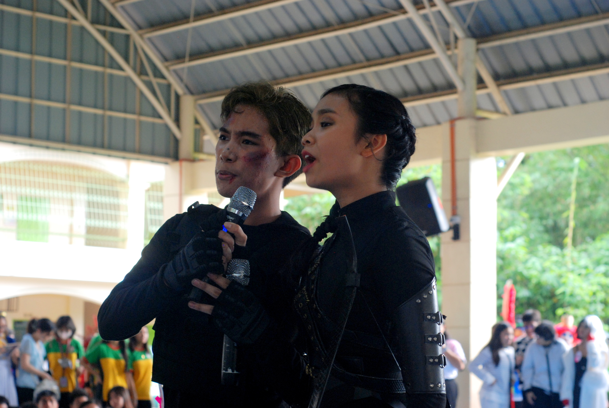
Booklandia
Booklandia is a literary event that celebrates the joy of reading and writing. It encourages students to explore various genres of literature, participate in book discussions, and showcase their creative writing skills. This event often includes book fairs, storytelling sessions, and writing competitions. Through Booklandia, I learned to appreciate the power of books in expanding our imagination and knowledge. It reminded me that reading is not just a hobby but a gateway to new worlds and ideas, and that writing is a valuable way to express ourselves and share our stories with others.
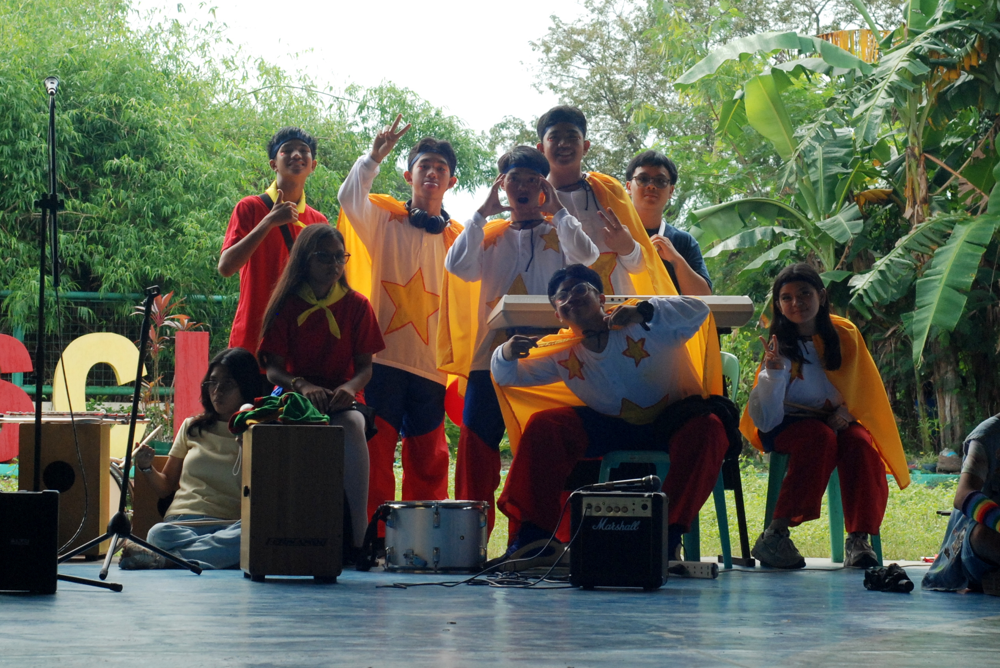
Vpop
Vpop, or Vietnamese Pop, is a music event that celebrates Vietnamese popular music and culture. It features performances by students showcasing their talent in singing and performing Vietnamese songs, often including modern pop hits and traditional influences. Through Vpop, I learned to appreciate the beauty of Vietnamese music and its unique blend of traditional and modern elements. It taught me that music is a universal language that can bridge cultures and bring people together, and that exploring different musical traditions enriches our understanding of the world.

Math Month
Math Month is a celebration dedicated to making mathematics engaging and accessible to all students. It includes various activities such as math competitions, problem-solving sessions, math games, and interactive workshops that demonstrate how math is used in everyday life. Through Math Month, I learned that math is not just about numbers but about logical thinking and problem-solving skills that are essential in our daily lives. It helped me appreciate the relevance of mathematics in various fields and encouraged me to develop a more positive attitude towards learning math.
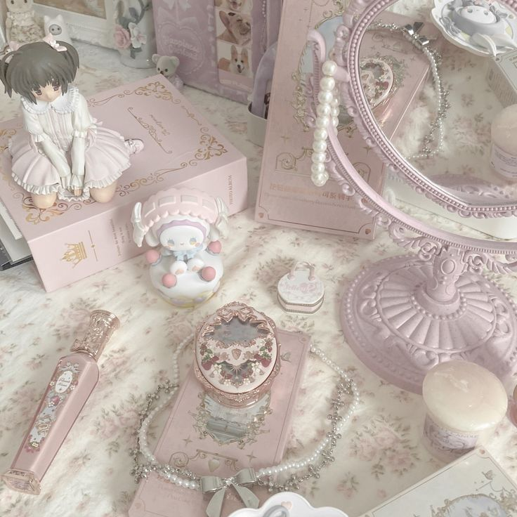
4th Quarter Events
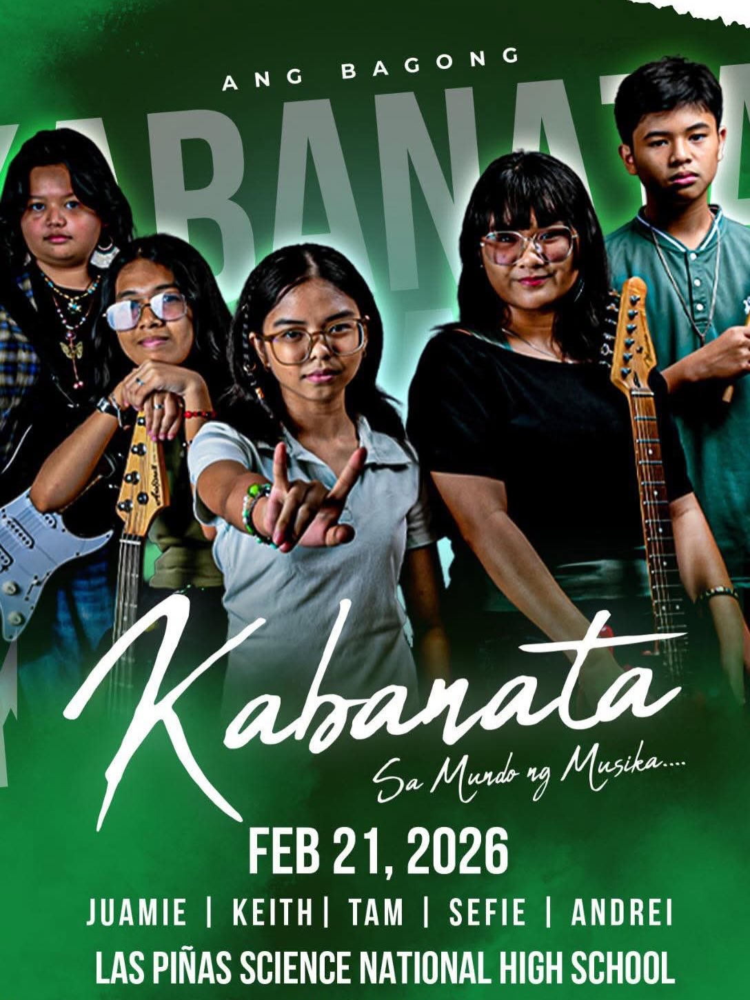
Battle of the Bands
Battle of the Bands is an exciting music competition where student bands compete to showcase their musical talents and stage presence. Bands perform various genres of music, from rock to pop, demonstrating their skill in playing instruments and vocals. Through Battle of the Bands, I learned the importance of teamwork and collaboration in creating music. It taught me that performing in front of an audience requires courage and confidence, and that music is a powerful form of expression that can bring people together and evoke emotions.
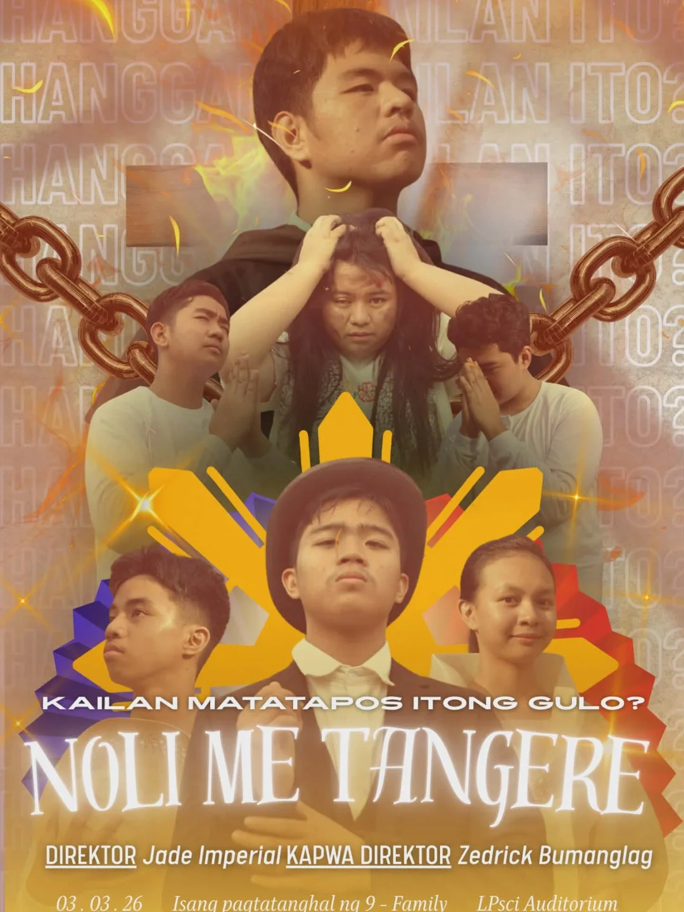
Noli me Tangere
Noli me Tangere is a novel written by the national hero Jose Rizal, which serves as a critical depiction of Philippine society during the Spanish colonial period. As a required reading in Filipino education, it challenges students to analyze the social issues and injustices portrayed in the story. Through studying Noli me Tangere, I learned about the importance of literature in exposing societal problems and inspiring change. It taught me to be critical of injustice, to value education as a tool for nation-building, and to appreciate the sacrifices of our national heroes in fighting for freedom and equality.
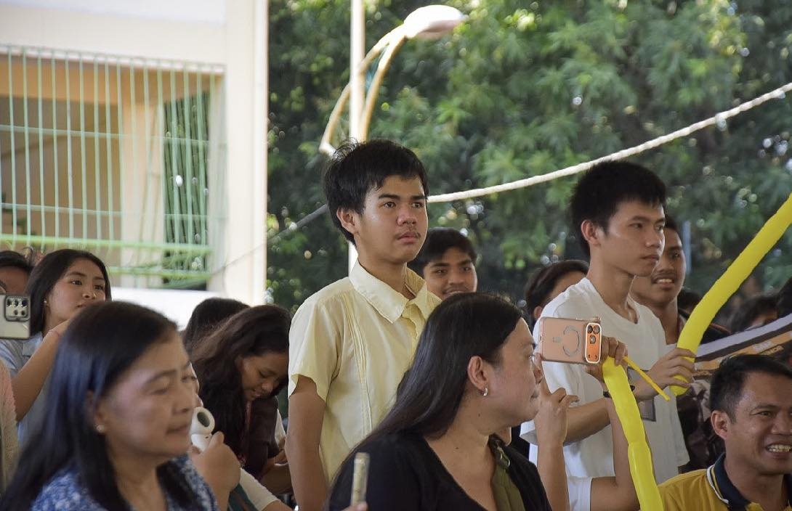
MAPEH Month
MAPEH Month is a celebration of the subjects Music, Arts, Physical Education, and Health. It is a month-long event where students participate in various activities that promote creativity, physical fitness, and holistic well-being. Activities include art exhibitions, music performances, sports competitions, and health awareness programs. Through MAPEH Month, I learned the importance of developing not just our intellectual abilities but also our physical health, artistic talents, and emotional well-being. It taught me that a balanced life includes caring for our body, expressing ourselves through art and music, and maintaining good health habits.
Noli Me Tangere
I really enjoyed playing my role as Sisa in our Noli Me Tangere performance. Sisa is a character who represents the suffering of mothers during the Spanish colonial period, and portraying her was both challenging and meaningful. Through this experience, I gained a deeper understanding of the struggles women faced in that era. I found the story of Noli Me Tangere to be very interesting because it not only tells a compelling narrative but also exposes the injustices of society in a way that still resonates today. The novel opened my eyes to the importance of standing up against oppression and valuing the sacrifices of those who fought for our freedom.